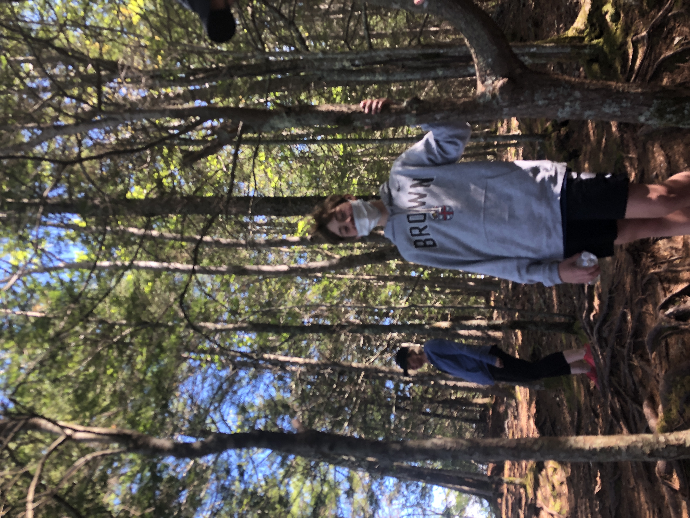
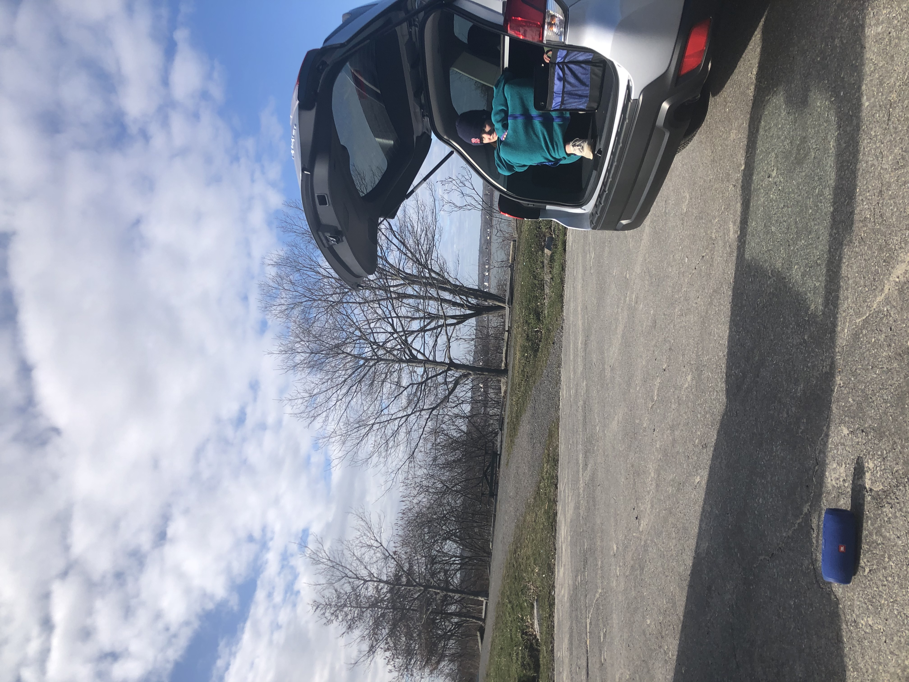

The Cliff Trail
May 10, 2020
In May of 2020 my family was antsy to get outside in the warm weather and decided to take a trip to Harspwell Maine where there is a beautiful Cliff Walk. The hike itself was pretty steep, at least compared to what I had hiked before. The view at the top was amazing of a little inlet of the ocean. The weather was pretty amazing that day and it felt really good to just be out of the house and enjoying nature with my family. One of the positive aspects of the Coronavirus pandemic has been discovering amazing new places nearby in Maine and a lot of these places I can't wait to get back to soon.
Read more
Read less

This picture was one of the best days because I got to see my friends Charlee and Neddie after I hadn't seen anyone since the lockdown began. Although it wasn't much of an "adventure" we parked our cars in a little circle and stayed 10 feet apart while blasting music and talking. It was such a simple day but it made me so happy to see my friends for the first time in months after we were used to seeing eachother everyday. My sister Annie also came along for the ride but she defintely wasn't thrilled with having to sit in the car for two hours. I was so happy to be sitting in my trunk with my speaker and food, this day was probaly one of the best days I had in April by far.
Read more
Read less